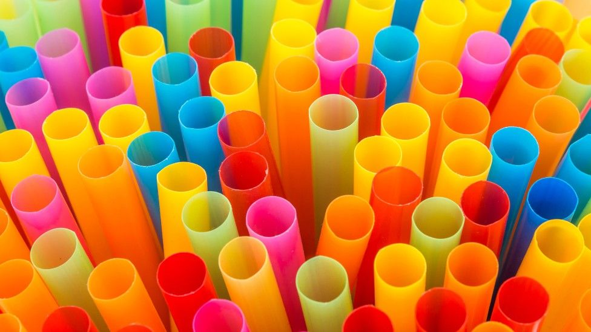
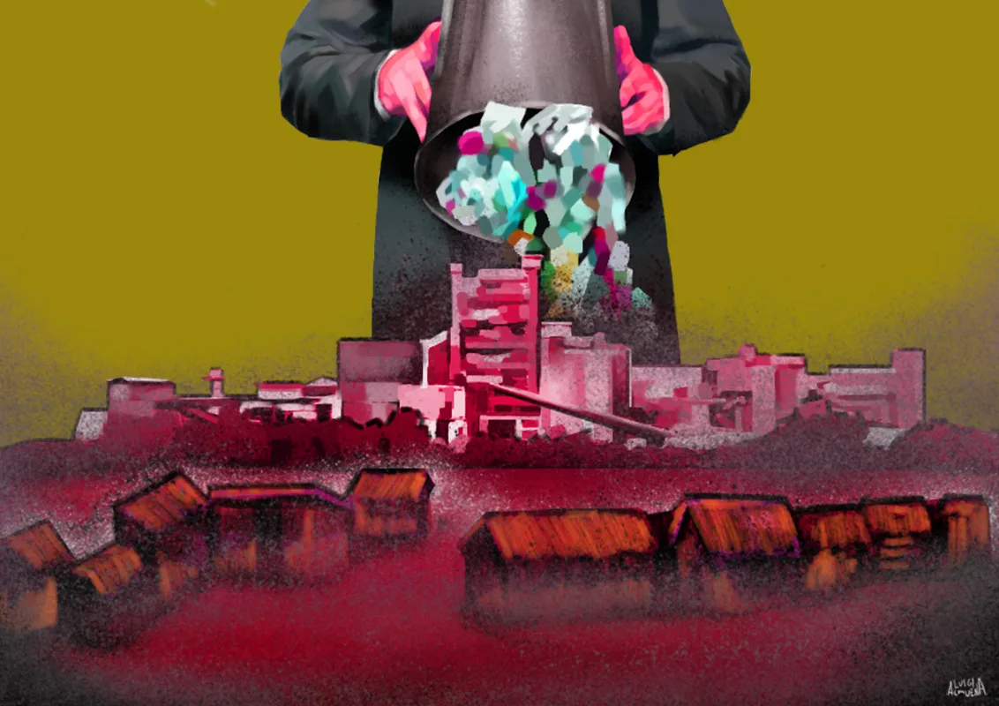
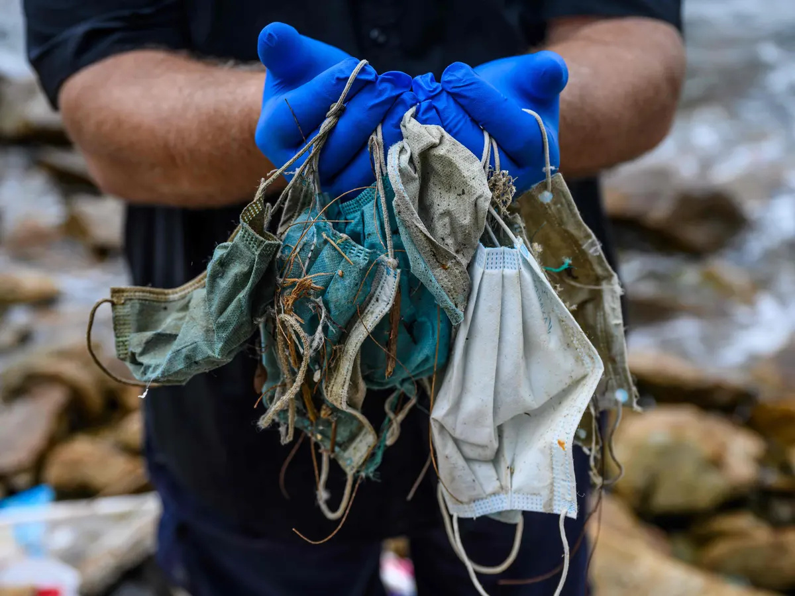

SC affirms ruling vs MWSS, Maynilad, Manila Water
MANILA, Philippines – The Supreme Court has unanimously affirmed its 2019 ruling that the Metropolitan Water Works and Sewerage System (MWSS) and concessionaires Maynilad Water
Services and Manila Water Company should be held liable for violating Republic Act 9275 or the Philippine Clean Water Act of 2004.
Read More

A year on, proposed ban on straws, stirrers at standstill
MANILA, Philippines – The proposed ban on plastic soft drink straws and coffee stirrers is at a standstill, over a year since the National Solid Waste Management Commission (NSWMC) declared these as “non-environmentally acceptable.”
Read More
How to restore PH’s lost mangrove forest? An Iloilo town shows the way
ILOILO, Philippines – Full-grown, healthy mangrove trees stood firmly on the coastline between the municipality of Leganes and the city of Iloilo, burying and stretching their intricately interwoven roots on the shore.
Read More

Al Gore sees the world at ‘tipping point’ for climate action
LONDON, United Kingdom – The world is at a “positive tipping point” in the fight against climate change as surging oil and gas costs spur governments to decarbonize faster, former US Vice President and co-founder of Generation Investment Management Al Gore told Reuters.
Read More

Health, environment concerns raised as PH cement plants burn plastic wastes for fuel
The DENR has pushed cement plants to burn plastic municipal wastes as alternative fuel to help address the country's solid waste problem. But critics are raising health concerns.
Read More

Face masks: A new threat to marine life
In Bauan, Batangas, locals and divers report a rise in the number of surgical face masks being collected from the ocean.
Read More